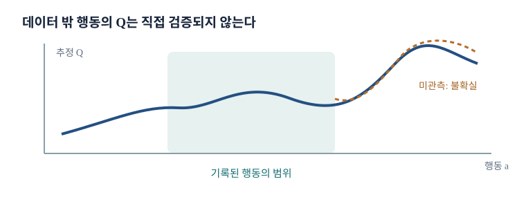

Offline RL
데이터가 고정되면 달라지는 문제
Offline RL은 고정된 데이터셋만으로 보상을 이용해 정책을 개선한다. 데이터 밖 행동의 가치를 잘못 추정하는 문제가 중심이다.
이 장의 방법 지도
방법들을 어느 연산에서 데이터 밖 행동을 통제하는가로 나눌 수 있다. TD3+BC는 actor를 기록 행동 근처에 묶고, CQL은 critic의 데이터 밖 Q를 낮춘다. Filtered BC는 높은 성과의 궤적을 남기고, AWR·IQL은 데이터 안 행동의 상대적 가치를 가중치로 사용한다. 뒤의 수식은 이 네 위치를 차례로 구체화한다.
Offline과 online의 자료 흐름
Online RL은 자료를 수집하고 갱신한 뒤 바뀐 정책으로 다시 자료를 모은다. Offline RL은 \(\mathcal D\)가 고정되어 학습 중 행동해도 그 결과가 추가되지 않는다. 학습된 정책을 최종 평가할 때 환경에서 실행할 수는 있지만, 그 평가 자료로 다시 학습했다면 순수 offline 설정이 아니다. 실험 보고서에서 이 경계를 명확히 해야 한다.
온라인 SAC의 replay buffer가 현재 10만 전이를 담고 있어도, 다음 rollout으로 새 actor의 결과를 확인해 넣을 수 있다. Offline SAC에는 그 통로가 없다. 같은 저장 형식과 같은 손실 함수를 써도 데이터 수집이 멈췄는가라는 조건 하나가 학습의 위험을 바꾼다.
행동 정책과 목표 정책
\(\mathcal D=\{(s,a,r,s',d)\}\)의 행동은 알 수 없거나 혼합된 행동 정책 \(\beta\)에서 나왔다. 학습 목표는 새 정책 \(\pi_\theta\)의 \(J(\pi)=E_{\tau\sim\pi}[\sum_t\gamma^t r_t]\)를 높이는 것이다. 자료의 상태–행동 분포 \(d^\beta(s,a)\)와 새 정책의 \(d^\pi(s,a)\)가 다르면, \(\mathcal D\)에서 작은 예측 오차도 실제 정책 아래에서는 크게 작용할 수 있다.
예를 들어 기록 정책 \(\beta\)가 어떤 상태에서 A를 99%, B를 1% 실행했는데 새 정책 \(\pi\)가 B를 90% 실행한다면, B의 소수 표본이 새 정책 성과를 좌우한다. 전체 데이터에서의 작은 Q 회귀 손실은 이 드문 행동의 오차를 가릴 수 있다. 정책이 바뀌는 방향과 기록의 밀도를 함께 보아야 한다.
BC와 궤적 연결
BC는 데이터의 각 상태에서 관측된 행동을 흉내 낸다. 예를 들어 데이터에 A→B와 B→C를 성공한 부분 경로가 따로 있으면 가치 기반 offline RL은 A에서 B로 간 뒤 B에서 C로 가는 새 조합을 찾아 A→C 과제를 해결할 수 있다. 이 stitching은 각 부분의 전이가 데이터에 충분히 존재하고, 상태 표현이 B를 같은 상태로 인식할 때 가능하다.
나쁜 시도도 그 행동의 결과와 보상을 알려 주므로 가치 학습에 정보가 된다. 반면 A→B와 B→C가 서로 다른 숨은 조건에서 기록됐다면 겉보기의 B가 같아도 연결이 실패할 수 있다. Stitching의 근거는 각 부분 경로의 공통 상태 표현과 일관된 전이 조건이다.
보지 못한 행동의 함정
데이터에서 상태 \(s'\)의 행동이 \(a_1\) 근처뿐인데 critic이 먼 \(a_2\)에 높은 \(Q(s',a_2)\)를 예측했다고 하자. 학습 손실은 데이터의 \((s',a_2)\)를 검사하지 못하므로 그 큰 예측을 교정할 근거가 없다. 그런데 actor나 \(\max_aQ\)가 바로 \(a_2\)를 선택해 높은 값을 이전 상태로 전파한다.
예를 들어 실제 Q가 A=5, B=0인데 데이터에는 A만 있고 망은 B를 12로 예측했다고 하자. Actor가 B를 선택하면 다음 상태의 Bellman 목표에도 12가 들어가 이전 상태의 Q까지 높아질 수 있다. OOD 추정 오류의 선택과 부트스트랩 전파가 함께 일어난다. Offline RL 개관
언제 필요한가
로봇 충돌이나 임상 처치처럼 새 행동을 시험하기 비싸거나 위험한 곳에서 과거 기록이 출발점이 된다. 다만 기록된 행동의 선택 과정까지 이해해야 결과를 해석할 수 있다. 의료 기록에서는 환자의 중증도나 담당자의 판단이 처치 선택과 결과에 함께 영향을 줄 수 있다. 이런 숨은 요인은 기술적인 OOD Q 문제와 별도로 인과적 평가를 어렵게 한다.
보통 off-policy Q-learning을 그대로 쓰면
일반 목표 \(y=r+\gamma\max_{a'}Q(s',a')\)는 기록되지 않은 다음 행동도 최댓값 후보로 삼는다. 앞 예의 B에 Q=12가 매겨지면 현재 전이의 목표는 \(r+12\gamma\)로 커진다. 이 값으로 학습한 현재 Q가 또 그 이전 상태의 목표로 들어간다. 고정 데이터에서 예측 오류가 선택되어 역방향으로 전파되는 경로다.

예측 Q와 실제 반환의 분리
정적 데이터로 SAC를 학습할 때 예측 Q는 오르지만 독립 평가 반환이 개선되지 않는 그래프가 있다. 예를 들어 평균 Q가 50에서 100으로 오르고 실제 반환은 20 근처라면, critic의 과대평가가 누적되었을 가능성을 살펴야 한다. 학습한 가치와 정책의 실제 성과를 별도 축으로 읽는다. BEAR 연구
Offline RL의 핵심 긴장
데이터 행동을 그대로 복제하면 BC 수준의 성과를 얻기 쉽지만, 기록에 섞인 나쁜 행동까지 따른다. 더 좋은 행동을 선택하려면 기록된 행동의 품질을 구별하거나 새로운 행동을 평가해야 한다. 후자에서는 critic의 외삽 오차가 커질 수 있으므로 개선 폭과 데이터 coverage를 함께 살핀다.
행동이 기록된 행동에 가까워도 그 행동이 이어 만든 상태는 데이터 범위 밖일 수 있다. 따라서 현재 상태에서의 행동 거리와 정책을 실행했을 때의 방문 상태 이동을 각각 점검해야 한다.
두 가지 주요 통제 위치
통제 위치는 세 곳이다. Actor 제약은 정책을 기록 행동 가까이에 두고, critic 보수화는 기록 밖 행동의 Q를 낮추며, 데이터 안 정책 추출은 기록 행동 중 좋은 쪽을 더 자주 고른다. 각각 새로운 행동으로 이동할 수 있는 범위가 다르므로 단순 BC와 같은 자료에서 비교한다.
TD3+BC의 목적
고정 데이터셋 \(\mathcal D\)에는 상태–행동 쌍 \((s,a)\)가 있다. \(\pi_\theta(s)\)는 파라미터 \(\theta\)인 actor의 행동, \(Q_\phi(s,a)\)는 파라미터 \(\phi\)인 critic의 가치 예측이다. TD3+BC는 데이터에서 기대한 Q를 높이되 actor 행동과 기록 행동 사이의 유클리드 제곱거리 \(\|\cdot\|_2^2\)를 벌점으로 준다. 두 항의 상대 비중은 \(\lambda>0\)가 정한다.
\(\lambda\)가 크면 가치 개선을 더 중시하고 작으면 BC에 가까워진다. 논문의 실제 구현은 Q 크기를 정규화해 두 항의 척도를 맞춘다. 데이터 행동이 무작위적이고 매우 나쁘다면 지나친 제약이 개선을 막지만, 제약이 약하면 OOD Q 오류가 다시 나타난다. TD3+BC 논문
한 상태의 기록 행동이 \(a=0.2\)이고 actor 출력이 0.8이라면 제곱거리 벌점은 \((0.8-0.2)^2=0.36\)이다. Actor가 0.3으로 움직이면 벌점은 0.01로 줄지만 Q 개선이 작을 수 있다. \(\lambda\)는 Q의 숫자 단위에 민감하므로, 가치와 행동 거리 항의 크기를 맞추지 않으면 어느 한쪽만 손실을 지배한다.
두 항이 행동을 어느 방향으로 미는지도 직접 미분할 수 있다. 한 데이터 쌍 \((s,a)\)를 고정하고, 그 기록 행동을 \(a_{\mathcal D}=a\), actor 출력을 \(u=\pi_\theta(s)\)라 쓰자. \(F(u)\)는 이 표본의 최대화 목적이고 \(\nabla_uF\)는 행동 벡터 \(u\)에 대한 기울기다.
첫 항은 critic이 예측한 가치 상승 방향이고, 둘째 항은 actor를 기록 행동으로 당긴다. \(Q\)가 국소적으로 \(Q(s,u)=cu+b\)인 1차원 예에서는 정지점이 \(u^*=a_{\mathcal D}+\lambda c/2\)다. 따라서 \(\lambda\)가 같아도 critic의 기울기 \(c\)가 크면 데이터에서 더 멀리 이동한다. 실제 행동 경계와 비선형 Q에서는 이 정지점이 그대로 최적해가 아니며, actor 파라미터에 대한 기울기는 위 식에 \(\nabla_\theta\pi_\theta(s)\)를 곱한 연쇄법칙으로 얻는다.
정책 제약과 가치 보수화
정책을 데이터에 묶는 방법은 이해하기 쉽지만 모든 상태에서 적절한 거리를 정하기 어렵다. 낮은 품질 데이터와 높은 품질 데이터가 섞였다면 단일 BC 벌점은 좋은 행동으로의 이동도 제한할 수 있다. CQL은 반대로 Q함수의 학습 목표를 바꿔 데이터 밖 행동의 매력을 낮춘다.
가치 보수화도 무조건 낮은 값을 만들면 좋은 개선 가능성을 지워 버린다. 목표는 데이터 안 행동과 데이터 밖 행동 사이의 상대적 값에 신뢰 가능한 간격을 주는 것이다.
행동 거리의 의미는 과업마다 다르다. 관절 토크 벡터에서 0.1 차이가 작은 변화일 수 있지만 접촉 직전 그리퍼 닫힘 명령의 0.1 차이는 성공과 실패를 가를 수 있다. 단일 L2 벌점은 이런 중요도를 자동으로 알지 못한다. 정책 제약을 쓸 때 행동 정규화와 차원별 단위를 먼저 확인해야 한다.
데이터 밖 Q를 낮추는 이유
Bellman 오차는 기록된 \((s,a)\)에서 계산된다. A 행동만 기록됐다면 B의 Q가 100이어도 직접 교정되지 않는다. CQL은 후보 행동의 높은 Q에 비용을 주고 기록 행동의 Q를 상대적으로 유지해 actor가 추정의 허점으로 이동할 유인을 줄인다. 실제로 좋은 미관측 행동까지 낮출 수 있다는 것이 보수성의 비용이다.
CQL의 첫 목적식
먼저 \(\mathcal L_{\mathrm{Bellman}}(Q)\)를 기록 전이에 맞춘 critic의 Bellman 회귀 손실이라 하자. \(\mathcal D\)에서 상태 \(s\)를 뽑고 제안분포 \(\mu(a\mid s)\)에서 후보 행동 \(a\)를 뽑는다. 후보의 높은 Q에 계수 \(\alpha>0\)의 벌점을 더하면
로 쓸 수 있다. 최소화하므로 두 번째 항은 \(\mu\)가 자주 제안하는 행동의 Q를 내린다. 그러나 모든 행동을 함께 내리면 데이터 행동의 가치까지 과하게 낮아질 수 있다. 다음 단계에서 데이터 행동의 Q를 끌어올리는 상대적 항을 넣는다. CQL 논문
후보 분포 \(\mu\)가 데이터 밖 행동 B를 많이 뽑는다면 \(E_{a\sim\mu}Q(s,a)\) 벌점은 B의 값을 낮춘다. 하지만 \(\mu\)가 데이터 행동만 뽑거나 중요한 OOD 행동을 놓치면 원하는 효과가 약해진다. 그래서 CQL의 구현을 볼 때는 정규화 계수뿐 아니라 후보 행동을 어떻게 샘플했는가를 함께 확인해야 한다.
데이터 행동과의 상대적 보수성
여기서 \(E_{s,a\sim\mu}\)는 실제로 \(s\sim\mathcal D\), \(a\sim\mu(\cdot\mid s)\)를 차례로 뽑은 기댓값의 약기다. \(E_{(s,a)\sim\mathcal D}\)는 기록된 상태–행동 쌍의 기댓값이다. 두 분포의 Q를 비교하는 CQL 정규화 항은
이다. 최소화하면 후보 행동의 Q는 내리고 실제 데이터 행동의 Q는 상대적으로 올린다. “모든 \((s,a)\)에서 학습 Q가 참 Q보다 낮다”는 강한 보장으로 읽으면 안 된다. 논문이 분석하는 보수성은 특정 정책과 데이터 분포 아래의 기대 가치에 관한 조건부 주장이다. \(\alpha\)가 너무 크면 실제로 좋은 행동까지 억누를 수 있다.
데이터 행동 Q가 5, 데이터 밖 후보 Q가 8이면 두 평균의 차이 3이 비용으로 들어간다. Critic은 이 격차를 줄이도록 갱신된다. 데이터 행동도 함께 내리는 해보다 후보만 낮추는 해가 상대 항을 더 빨리 줄일 수 있다.
Log-sum-exp가 나오는 이유
고정 상태 \(s\)에서 이산 행동의 제안분포를 \(\mu_a=\mu(a\mid s)\), 가치 예측을 \(Q_a=Q(s,a)\)라 쓰자. \(H(\mu)=-\sum_a\mu_a\log\mu_a\)는 엔트로피다. 가치가 높은 행동을 선호하면서 분포가 한 행동으로 몰리지 않도록 \(E_{a\sim\mu}Q_a+H(\mu)\)를 최대화한다. 확률의 합 \(\sum_a\mu_a=1\)을 제약하면 최적값은
이를 유도하려면 \(F(\mu)=\sum_a\mu_aQ_a-\sum_a\mu_a\log\mu_a\)에 정규화 제약의 승수 \(c(\sum_a\mu_a-1)\)를 더한다. \(\mu_a\)로 미분한 정지 조건은 \(Q_a-\log\mu_a-1+c=0\)이다. \(Z=\sum_b e^{Q_b}\)라 정의하면 최적 후보분포는 \(\mu_a^*=e^{Q_a}/Z\)다. 이때 \(\log\mu_a^*=Q_a-\log Z\)이므로 \(F(\mu^*)=\sum_a\mu_a^*Q_a-\sum_a\mu_a^*(Q_a-\log Z)=\log Z\)가 되어 위 식을 얻는다.
두 행동 Q가 2와 0이면 \(\log(e^2+e^0)\approx2.13\)이다. 데이터 행동의 Q가 2이면 CQL의 차이 항은 약 0.13, Q가 0이면 약 2.13이다. 또한 log-sum-exp를 \(Q_a\)로 미분하면 \(\mu_a\)이므로 큰 Q를 가진 후보 행동일수록 더 큰 하향 압력을 받는다. 연속 행동에서 이 합을 근사할 때는 후보 행동을 뽑은 분포와 밀도를 계산에 반영한다. CQL 원논문
CQL 학습과 조절 계수
이산 행동에서 \(\mathcal D(a\mid s)\)를 기록 행동의 조건부분포, \(\alpha>0\)를 보수화 강도로 두면 Bellman 회귀에 다음 정규화 항을 더한다.
연속 행동 SAC와 결합할 때는 적절한 행동 샘플링으로 log-sum-exp를 근사한다. \(\alpha\)가 크면 분포 밖 낙관을 줄이지만 정책이 너무 보수적으로 남을 수 있다. 값의 척도와 샘플 수를 함께 조절해야 한다. CQL 논문
연속 행동 공간 \(\mathcal A\)에서는 이산 합에 대응하는 \(I(s)=\log\int_{\mathcal A}\exp\{Q(s,a)\}\,da\)를 계산해야 한다. 제안밀도 \(q(a\mid s)>0\)에서 독립적인 후보 \(a_1,\ldots,a_N\)을 뽑는다고 하자. \(q\)를 곱하고 나누면 적분 안쪽에 중요도 샘플링 항등식을 적용할 수 있다.
마지막 합에 로그를 취해 \(I(s)\)를 근사한다. 특정 행동을 자주 뽑는 제안분포 \(q\)를 사용하면서 \(1/q\)를 빼면 그 행동의 높은 Q를 과도하게 반영한다. 반대로 \(q\)가 중요한 영역에 거의 질량을 주지 않으면 몇 개 표본의 가중치가 커져 근사가 불안정하다. 유한 표본에서 로그를 취한 추정량 자체는 편향될 수 있으며, 구현의 행동 샘플링·밀도 보정·수치 안정화가 결과에 영향을 준다.
\(\alpha\)가 작으면 Bellman 손실이, 크면 보수화 항이 갱신을 지배한다. 두 항의 크기와 정책이 선택한 행동의 기록 데이터 밀도를 함께 보면 보수성의 강도를 해석할 수 있다.
Offline RL의 평가는 왜 까다로운가
고정 데이터에서 만든 정책을 학습 중 환경에 실행할 수 없다면, 성능 평가에도 별도의 자료나 실험이 필요하다.
D4RL 데이터셋
D4RL은 고정된 MuJoCo 및 다른 환경 자료를 제공해 offline 알고리즘을 같은 데이터로 비교하게 한다. random, medium, medium-replay, medium-expert 등은 수집 행동의 품질과 혼합 방식이 다르다. Expert 자료가 많을수록 BC가 강한 기준선이 되지만, 다양한 품질의 replay에는 RL의 재가중·stitching 여지가 커질 수 있다.
점수는 보통 환경별 reference score로 정규화된다. 그래서 서로 다른 환경의 raw return이나 버전이 다른 정규화 점수를 단순 합산하면 안 된다. D4RL 논문
같은 Ant 과제에서도 expert 데이터는 높은 반환 행동이 많지만 상태 범위가 좁을 수 있고, medium-replay 데이터는 학습 중 여러 수준의 행동을 포함해 stitching 가능성이 있다. 어느 쪽이 무조건 쉽다고 볼 수 없다. 알고리즘 점수를 읽을 때 데이터셋 이름 뒤에 숨은 수집 정책의 품질과 coverage를 확인해야 한다.
데이터의 질과 다양성
D4RL의 여러 데이터 유형에서 BC, TD3+BC, CQL을 비교한 표다. 같은 알고리즘도 데이터의 품질과 범위에 따라 성능이 달라진다.
OGBench와 목표 조건부 학습
OGBench는 주어진 목표 \(g\)를 달성하는 \(\pi(a\mid s,g)\)를 offline 데이터에서 학습하는 과제를 제공한다. 고정 데이터의 부분 경로를 연결해 보지 못한 시작–목표 조합을 해결하는 능력을 시험한다. 한 목표에서 높은 반환을 내는 정책과 다양한 목표를 처리하는 정책의 평가는 다르다. 데이터의 goal coverage, 성공 판정과 평가 목표 분포를 함께 확인한다. OGBench 논문
목표가 B인 궤적과 목표가 C인 궤적이 따로 있을 때, 같은 중간 상태를 지나면 부분 경로를 이어 새로운 시작–목표 조합을 해결할 수 있다. 그러나 상태가 비슷해 보인다는 이유만으로 연결하면 숨겨진 물체 위치나 속도의 차이 때문에 실패할 수 있다. 목표 조건부 정책의 성과를 볼 때 보지 못한 목표 조합과 새로운 환경 상태를 따로 평가해야 한다.
TD3+BC와 CQL을 비교하기
TD3+BC는 actor 손실에서 기록 행동과의 거리를 벌점으로 주고, CQL은 critic의 데이터 밖 행동 값을 낮춘다. 연속 행동의 거리 벌점은 관절별 단위와 정규화에 민감하며, CQL은 정규화 계수 \(\alpha\)와 후보 행동의 샘플링 분포에 민감하다. 제약이 너무 강하면 데이터 밖에 있는 좋은 행동도 선택하기 어렵다.
두 방법이 같은 벤치마크에서 비슷한 반환을 얻어도 억제한 오류는 다를 수 있다. 기록 행동의 범위를 바꾸어 실험하고, actor가 고른 행동의 거리와 critic의 Q 예측을 함께 보면 어느 제약이 성과를 좌우했는지 파악할 수 있다.
다른 개선 경로의 질문
Filtered BC, AWR, IQL은 기록된 행동 중 좋은 쪽을 더 자주 선택하는 방향으로 간다. 데이터 안 행동의 반환이나 상대적 가치를 이용하므로 임의의 새 행동을 Q로 평가하는 부담이 줄어든다. 좋은 행동이 기록 어딘가에 있어야 이 선택이 가능하다.
OOD 평가가 남는 자리
TD3+BC의 actor 항 \(Q(s,\pi(s))\)는 \(\pi(s)\)가 기록 행동과 조금만 달라도 critic의 일반화에 의존한다. CQL 역시 후보 행동의 Q를 계산한다. AWR은 actor 업데이트에서 기록 행동의 로그확률만 학습하므로 이 평가를 피하지만, 정책 개선의 방향은 기록된 행동의 품질에 묶인다.
보상을 쓰는 행동복제
다음 방법들은 Q값으로 데이터 밖 행동을 직접 선택하는 대신, 데이터 속 행동을 보상에 따라 다르게 모방한다.
Filtered BC
각 궤적의 반환 \(R(\tau)=\sum_t\gamma^t r_t\)를 계산하고 상위 \(K\%\) 또는 임계값 \(\eta\) 이상인 궤적만 남긴다. 이어 \(\max_\theta E_{(s,a)\sim\widetilde{\mathcal D}}\log\pi_\theta(a\mid s)\)로 모방한다. 반환이 큰 궤적이 반드시 모든 상태에서 최선의 행동으로 구성되지는 않는다. 쉬운 초기 상태를 받은 궤적이 높게 평가되고 어려운 상태에서 잘 대처한 궤적이 버려질 수도 있다.
성공 궤적만 남기면 오히려 나빠질 수도 있나?
가능하다. 남은 자료가 매우 작아지거나 특정 초기 상태만 대표하면 배포 때 다른 상태를 다루지 못한다. 상태 난도와 운의 영향까지 고려하려면 같은 상태에서 행동의 상대적 품질을 추정해야 한다.
쉬운 시작 상태에서 반환 100을 얻은 궤적과 어려운 상태에서 복구해 80을 얻은 궤적이라면, 상위 반환만 남길 때 두 번째 궤적의 복구 행동이 사라질 수 있다. 선별 비율을 낮출수록 행동 라벨은 깨끗해지지만 상태 coverage도 줄어든다. 상태별 기준을 뺀 advantage로 각 행동의 상대적 품질을 평가하는 다음 방법과 연결된다.
AWR의 연속적 가중치
AWR은 각 기록 행동의 상대적 우수성을 가중치로 만든다. \(R_t=\sum_{k=t}^{T-1}\gamma^{k-t}r_k\)는 시점 \(t\) 이후의 기록 궤적 반환, \(\widehat V(s_t)\)는 그 반환에 회귀한 상태가치 추정치다. 둘의 차이 \(\widehat A_t=R_t-\widehat V(s_t)\)를 advantage 추정치라 한다. \(\pi_\theta\)는 학습할 정책, \(\eta>0\)는 가중치의 온도다. 기록 전이 \((s_t,a_t)\sim\mathcal D\)에 대해
로 가중 BC를 한다. \(\eta\)가 작으면 높은 advantage에 가중치가 몰리고 커지면 거의 BC가 된다. 보통 폭주를 막기 위해 가중치를 clip한다. 역온도 \(\kappa=1/\eta\)로 쓰면 같은 가중치가 \(e^{\kappa\widehat A}\)다. AWR 논문
\(\eta=1\)에서 advantage가 2인 행동의 가중치는 \(e^2\approx7.39\), advantage가 -1인 행동은 \(e^{-1}\approx0.37\)이다. 두 행동의 가중치 비가 약 20배가 된다. \(\eta\)가 작아지면 이 차이가 더 커져 소수의 표본만 학습을 지배할 수 있으므로 가중치 clipping이나 정규화가 필요하다.
KL 제약에서 지수 가중치가 나오는 직관
한 상태에서 기록 행동의 분포를 \(\beta(a\mid s)\), 개선할 분포를 \(\pi(a\mid s)\)라 하자. \(Q(s,a)\)는 행동가치, \(V(s)\)는 같은 상태의 기준 가치, \(A(s,a)=Q(s,a)-V(s)\)는 advantage다. \(D_{\mathrm{KL}}(\pi\|\beta)=E_{a\sim\pi}[\log\{\pi(a\mid s)/\beta(a\mid s)\}]\)는 새 분포가 기록 분포에서 벗어난 정도다. \(\eta>0\)을 이 이탈의 벌점 계수로 두고 \(E_\pi Q-\eta D_{\mathrm{KL}}\)를 최대화하면
가 된다. \(V(s)\)는 같은 상태의 모든 행동에 공통이라 정규화 상수로 흡수된다. 그래서 데이터 행동을 advantage 지수로 재가중한 지도학습이 이 개선을 근사한다. 실제 AWR은 근사 가치와 제한된 함수계열을 쓰므로 이 이상적인 식과 완전히 같지 않다.
같은 상태의 행동 A와 B가 기록 정책에서 각각 0.5 확률이고 Q가 4와 6이라면 \(\eta=1\)의 이상적 개선 분포는 \(e^4:e^6=1:e^2\) 비율로 B 쪽으로 기운다. 기록 확률 \(\beta(a\mid s)=0\)인 행동은 해의 support 밖에 남는다.
지수 가중치의 출처를 한 단계씩 계산해 보자. 상태 \(s\)를 고정하고 \(\pi_a=\pi(a\mid s)\), \(\beta_a=\beta(a\mid s)\), \(Q_a=Q(s,a)\)라 줄여 쓰자. \(F(\pi)=\sum_a\pi_aQ_a-\eta\sum_a\pi_a\log(\pi_a/\beta_a)\)를 최대화하고 \(\sum_a\pi_a=1\)을 승수 \(c\)로 강제한다. \(\pi_a\)에 대한 정지 조건은 \(Q_a-\eta[\log(\pi_a/\beta_a)+1]+c=0\)이다. 이를 풀면 \(\pi_a=\beta_a\exp(Q_a/\eta)\exp(c/\eta-1)\)이고, \(\sum_a\pi_a=1\)을 대입하면 공통인자는 \(1/\sum_{a'} \beta_{a'}\exp(Q_{a'}/\eta)\)다. 상태마다 공통인 \(V(s)\)를 \(Q\)에서 빼도 행동 간 비율은 같아져 \(e^{A/\eta}\)를 사용할 수 있다.
왜 KL의 방향을 \(D_{\mathrm{KL}}(\pi\|\beta)\)로 쓰는가?
이 방향의 KL은 \(\beta(a\mid s)=0\)인 행동에 새 정책이 양의 확률을 주면 무한대가 된다. 따라서 이상적인 해의 support가 기록 정책 안에 남는다. 반대 방향 \(D_{\mathrm{KL}}(\beta\|\pi)\)는 같은 최적화 해와 같은 support 제약을 주지 않는다.
AWR의 장점과 경계
Actor는 데이터에 있는 행동만 가중해 모방한다. 그러나 AWR의 Monte Carlo 반환 \(R_t\)는 현재 행동 뒤에도 수집 정책이 실제로 했던 행동의 결과다. 좋은 현재 행동 다음에 수집 정책이 실패했다면 그 행동에 낮은 가중치가 붙을 수 있다.
두 단계 예를 보자. 현재 행동 A는 보상 0을 주고 다음 상태로 가며, 그 상태의 데이터에는 보상 10인 좋은 행동과 보상 0인 나쁜 행동이 모두 있다. 수집 정책이 좋은 행동을 10%만 골랐다면 \(\gamma=1\)에서 A의 수집 정책 기준 기대 반환은 \(0.1\cdot10+0.9\cdot0=1\)이다. 현재 행동 B는 즉시 2를 받고 종료한다고 하자. A를 실행한 자료의 90%는 반환 0을 기록하므로 AWR에서는 이 사례들이 낮게 가중된다. 드문 반환 10 사례에는 큰 지수 가중치가 붙으므로 A와 B의 최종 가중치 순위는 온도와 표본 수에 따라 달라진다. 그러나 다음 상태에서 좋은 기록 행동을 선택하며 이어 갈 수 있다면 A 다음의 반환은 10이 될 수 있다. AWR의 Monte Carlo 가중치와 개선 정책의 미래 가치가 다른 이유이며, IQL은 데이터 안에 있는 좋은 후속 행동을 가치 부트스트랩에 반영하려 한다. 좋은 행동의 데이터가 전혀 없다면 이 개선도 불가능하다.
SARSA식 데이터 안 부트스트랩
일반 Q 목표의 \(\max_{a'}Q(s',a')\)는 미관측 행동을 고른다. 연속 데이터 궤적에 실제 다음 행동 \(a'_{\mathcal D}\)가 있다면 \(y=r+\gamma Q_{\bar\phi}(s',a'_{\mathcal D})\)로 바꿀 수 있다. 이는 데이터 밖 행동을 평가하지 않는 SARSA식 목표다. 그러나 다음 행동이 나쁜 수집 정책에서 왔다면 그 나쁜 행동의 가치까지 그대로 반영한다. 데이터 안에서 좋은 행동 쪽으로 개선할 장치가 필요하다.
다음 상태에 보상 10인 행동과 보상 0인 행동이 모두 기록돼 있는데 수집된 궤적은 0을 택했다고 하자. SARSA식 목표는 그 궤적의 0을 따른다. IQL의 높은 expectile은 기록된 행동들 중 상대적으로 좋은 후속 행동의 가치를 부트스트랩에 반영한다.
데이터 행동 중 좋은 쪽을 고르기
이론적으로는 데이터 행동 분포 \(\beta(a\mid s)\)가 지지하는 행동 중 \(\max Q(s,a)\)를 택하고 싶다. 하지만 연속 상태에서 같은 \(s\)의 여러 행동을 충분히 관측하기 어렵고, 표본 최대값은 다시 오차에 민감하다. IQL은 데이터에서 관측한 \(Q(s,a)\)들의 상태별 상위 방향을 추정하는 상태 가치 \(V(s)\)를 학습한다. 그것이 명시적 OOD 행동 최대화의 대리 역할을 한다.
같은 상태에서 관측된 행동 Q가 \([1,2,9]\)라면 평균은 4, 표본 최대는 9다. Expectile은 높은 Q를 놓치는 오차에 더 큰 가중치를 주어 두 값 사이의 상위 방향 가치를 얻는다. 높은 Q가 실제로 관측된 행동에서 나왔다는 점이 핵심이다.
Expectile 가치의 의미
한 상태 \(s\)에서 기록 행동 \(a\sim\mathcal D(\cdot\mid s)\)의 \(Q(s,a)\)를 확률변수로 보자. 일반 제곱오차 \(\min_vE[(Q-v)^2]\)의 최적값은 이 Q들의 평균이다. IQL은 상태가치 \(V(s)\)를 평균보다 높은 쪽에 놓기 위해 잔차 \(u=Q(s,a)-V(s)\)에 비대칭 가중치를 준다. \(\mathbf1\{u<0\}\)는 \(u<0\)이면 1, 아니면 0인 지시함수이고, \(\tau\in(0,1)\)는 expectile 수준이다.
를 최소화한다. \(\tau>0.5\)이면 \(V\)보다 높은 Q에 더 큰 벌점을 주어 \(V\)가 데이터 행동 Q분포의 위쪽으로 올라간다. \(\tau=0.9\)가 정확한 상위 10% 분위수라는 뜻은 아니다. Expectile은 가중 제곱오차의 해이고 quantile은 절댓값 기반의 다른 통계량이다. IQL 논문
잔차 \(u\ge0\)에는 \(\tau\), \(u<0\)에는 \(1-\tau\)가 곱해진다. 다음 정지 조건이 비대칭 가중치의 효과를 정량화한다.
한 상태에서 \(V(s)=v\) 하나만 최적화한다고 보자. \((x)_+=\max(x,0)\)는 양의 부분이다. \(u=Q-v>0\)일 때 손실의 미분은 \(-2\tau(Q-v)\)이고 \(u<0\)일 때는 \(2(1-\tau)(v-Q)\)다. 기록 행동의 조건부분포 \(a\sim\mathcal D(\cdot\mid s)\)로 두 값을 평균낸 뒤 0으로 놓으면
이다. 왼쪽은 \(v\)보다 높은 Q를 얼마나 놓쳤는가, 오른쪽은 낮은 Q보다 \(v\)를 얼마나 높게 잡았는가의 균형이다. \(\tau=0.5\)이면 두 편차의 균형점이 평균이 되고, \(\tau>0.5\)이면 높은 Q를 놓친 비용이 커져 균형점이 위로 간다. 이 식은 상위 몇 퍼센트를 단순히 골라 평균내는 절차와 다르다.
\(\tau=0.9\)이면 행동의 상위 10%만 선택하거나 90th percentile을 구하는가?
둘 다 아니다. Expectile은 높은 Q를 낮게 예측할 때 \(0.9\), 낮은 Q를 높게 예측할 때 \(0.1\)로 제곱오차를 가중해 하나의 상태가치를 맞춘다. Quantile은 잔차의 크기에 선형인 pinball loss를 최소화한다. 같은 \(0\)과 \(10\)의 반반 분포에서 \(0.9\) expectile은 \(9\)지만 \(0.9\) quantile은 \(10\)이다. IQL의 \(\tau\)는 선택할 표본의 비율도 아니다.
비대칭 제곱손실 예
\(\tau=0.9\)라면 \(u>0\), 즉 예측 \(V\)가 관측 Q보다 낮을 때 손실 가중치가 \(0.9\)다. \(u<0\)이면 가중치는 \(0.1\)이다. 높은 Q값을 놓친 경우 더 크게 벌하므로 최적 \(V\)가 올라간다. 예를 들어 같은 상태 행동 Q가 0과 10을 같은 확률로 갖는다면 평균은 5지만 \(\tau=0.9\) expectile은 \(0.1v^2+0.9(10-v)^2\)의 최소점 \(v=9\)다. 계산은 \(0.2v-1.8(10-v)=0\)에서 나온다.
앞 슬라이드의 정지 조건에 같은 두 점 분포를 대입하면 \(\tau(10-v)=(1-\tau)v\)가 되어 \(v=10\tau\)다. \(\tau=0.5\)이면 평균 5, \(\tau=0.9\)이면 9다. 0.9 quantile은 10이므로 expectile과 quantile의 차이도 숫자로 드러난다.
IQL의 세 단계
IQL의 가치 학습은 세 단계다. 먼저 데이터 행동의 \(Q_{\bar\phi}(s,a)\)에 상위 expectile 회귀를 적용해 상태가치 \(V_\psi(s)\)를 맞춘다. 다음으로 기록 전이 \((s,a,r,s',d)\)에서 \(y=r+\gamma(1-d)V_\psi(s')\)를 만들어 \(Q_\phi(s,a)\)를 회귀한다. \(d=1\)은 종료, \(\bar\phi\)는 target critic 파라미터, \(\psi\)는 상태가치망 파라미터다. 마지막으로 \(A(s,a)=Q_\phi(s,a)-V_\psi(s)\)를 계산하고 \(e^{\kappa A(s,a)}\)를 가중치로 기록 행동을 모방한다. \(\kappa>0\)는 좋은 행동에 가중치를 몰아주는 역온도다. IQL 논문
Q 목표에는 다음 상태의 임의 actor 행동이 들어가지 않는다. 높은 expectile \(V(s')\)가 데이터 안에서 좋은 행동이 이어질 때의 가치를 대리하고, actor도 기록 행동의 가중 BC로 추출한다. \(\tau\)는 가치의 상위 지향 정도, \(\kappa\)는 정책 추출의 선택 강도를 조절한다. 실제 배포에서는 새 상태를 방문할 수 있으므로 독립적인 rollout 평가가 필요하다.
방법들의 공통 기준
D4RL에서 IQL을 비롯한 offline RL 방법을 비교한 결과 표다. 과제와 데이터 유형을 나누어 읽어야 하며 한 숫자로 모든 방법의 우열을 정할 수 없다.
고정 자료 학습의 응용
Offline RL은 온라인 시행착오가 비싸거나 위험하고 기존 상호작용 기록이 충분한 분야에서 유용하다.
로봇에서 offline 사전학습과 online 미세조정
로봇의 기존 시연과 실행 로그로 정책을 미리 학습한 뒤, 허용되는 범위에서 실제 상호작용으로 조정하는 사례다.
핵융합 플라스마 제어
핵융합 플라스마 제어의 사례다. 실제 시스템에서 무작위 탐색을 하기 어렵기 때문에 기록된 운용 데이터를 활용한다.
건물 냉각 제어
건물 냉각 제어의 사례다. 기존 운용 기록에서 에너지 사용과 실내 조건의 관계를 학습한다.
칩 회로 설계와 PrefixRL
칩 회로 설계에 순차적 의사결정을 적용한 사례다. 기존 설계 기록이 있다면 정책 학습에 활용할 수 있다.
전체 정리
고정 데이터에서 정책을 개선하려면 데이터 밖 행동의 가치를 과신하지 않아야 한다. TD3+BC는 행동을 기록 근처에, CQL은 가치 평가를 보수적으로, Filtered BC는 좋은 궤적에, AWR은 높은 advantage 행동에, IQL은 데이터 안 행동의 높은 expectile에 초점을 둔다.
데이터 밖 행동의 결과는 기록에서 직접 확인할 수 없다. 성능을 판단할 때는 수집 정책의 범위, 학습 중 새 자료 유무, 독립 평가 절차를 함께 명시한다. 이 기준은 로봇·산업 제어와 다른 로그 기반 의사결정에도 적용된다.
마지막으로 새로운 고정 데이터 문제를 만나면 네 가지를 먼저 묻자. 누가 자료를 모았는가, 어떤 행동이 빠졌는가, 보상을 어떻게 측정했는가, 새 정책을 어떻게 독립 검증할 수 있는가? 이 답이 있어야 BC와 가치 기반 방법의 차이, OOD 위험, 개선의 실질적 근거를 판단할 수 있다.